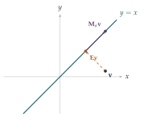

STEP III 1996, Question 6
Read the question before you go on. It is in the STEP Support Programme’s question database: step.maths.org/questions/96-s3-q6
The hook
Every student learns that a matrix with zero determinant has no inverse. So a group of matrices, in which every element has an inverse, surely cannot contain any singular matrices?
It can. The catch is in the word “inverse”. In a group, the inverse of \(\mathbf{A}\) is the element that combines with \(\mathbf{A}\) to give the group’s identity, and nothing says the group’s identity has to be the identity matrix \(\mathbf{I}\). This question builds a group in which every matrix is singular, and the identity element is a matrix with determinant zero. It is a lesson in reading definitions literally, and in the difference between an abstract structure and the familiar example you first met it in.
Before you start
For the definition of a group, see Section 6.6.
In part (i), the identity matrix \(\mathbf{I}\) is not of the form \(\begin{pmatrix} a & a \\ a & a \end{pmatrix}\). So what could the identity element of \(S\) be?
It must be some matrix \(\mathbf{E}\) in \(S\) with \(\mathbf{E}\mathbf{X} = \mathbf{X}\mathbf{E} = \mathbf{X}\) for every \(\mathbf{X}\) in \(S\). That is a condition only on how \(\mathbf{E}\) acts on matrices of this special form, not on all matrices. Find it by solving the equation.
Working it through
Stage 1 Closure
Write \(\mathbf{M}_a\) for the matrix with all four entries equal to \(a\). Then \[\mathbf{M}_a\mathbf{M}_b = \begin{pmatrix} a & a \\ a & a \end{pmatrix}\begin{pmatrix} b & b \\ b & b \end{pmatrix} = \begin{pmatrix} 2ab & 2ab \\ 2ab & 2ab \end{pmatrix} = \mathbf{M}_{2ab},\] and \(2ab \neq 0\) when \(a, b \neq 0\). So \(S\) is closed.■
Stage 2 The group axioms
Matrix multiplication is associative. For the identity, solve \(\mathbf{M}_e\mathbf{M}_a = \mathbf{M}_a\). For inverses, solve \(\mathbf{M}_a\mathbf{M}_b = \mathbf{M}_e\).
Associativity is inherited from matrix multiplication. Identity: \(\mathbf{M}_e\mathbf{M}_a = \mathbf{M}_{2ea} = \mathbf{M}_a\) for all \(a\) exactly when \(e = \frac12\); by the symmetry of the formula, \(\mathbf{M}_a\mathbf{M}_{1/2} = \mathbf{M}_a\) too. So \[\mathbf{E} = \begin{pmatrix} \frac12 & \frac12 \\ \frac12 & \frac12 \end{pmatrix}\] is the identity of \(S\). Inverses: \(\mathbf{M}_a\mathbf{M}_b = \mathbf{M}_{2ab} = \mathbf{M}_{1/2}\) when \(b = \frac{1}{4a}\), which is non-zero, so \(\mathbf{M}_{1/(4a)}\) is the inverse of \(\mathbf{M}_a\) in \(S\). So \(S\) is a group.■ Every element has determinant \(a^2 - a^2 = 0\).
Stage 3 Singularity spreads
Suppose \(\mathbf{A} \in G\) is singular, and let \(\mathbf{B}\) be any element of \(G\). Write \(\mathbf{B}\) as a product involving \(\mathbf{A}\), and take determinants.
Let \(\mathbf{A}^{-1}\) denote the inverse of \(\mathbf{A}\) in the group \(G\) (not necessarily a matrix inverse). Then \(\mathbf{C} = \mathbf{A}^{-1}\mathbf{B}\) is in \(G\), and \[\mathbf{A}\mathbf{C} = \mathbf{A}\mathbf{A}^{-1}\mathbf{B} = \mathbf{E}\mathbf{B} = \mathbf{B}.\] Taking determinants, \(\det\mathbf{B} = \det\mathbf{A}\,\det\mathbf{C} = 0\). So every element of \(G\) is singular.■ In particular, if one element of a matrix group is invertible as a matrix, all are; a matrix group is either entirely invertible or entirely singular.
Stage 4 A \(3 \times 3\) example
Can you generalise part (i) to \(3 \times 3\) matrices? Or find something even simpler, using a matrix that “ignores” two of the three coordinates?
Take \[G = \left\{\begin{pmatrix} a & 0 & 0 \\ 0 & 0 & 0 \\ 0 & 0 & 0 \end{pmatrix} : a \neq 0\right\}.\] The product of the matrices with corner entries \(a\) and \(b\) is the one with corner entry \(ab\), so \(G\) is closed; multiplication is associative; the identity is the matrix with corner entry \(1\); the inverse of the one with corner \(a\) is the one with corner \(\frac1a\). So \(G\) is a group, and every element has determinant \(0\).■ (Another example: the \(3 \times 3\) matrices with all nine entries equal to \(a \neq 0\), whose identity has all entries \(\frac13\).)
Looking back
Read definitions literally. A group’s identity is whatever element acts as an identity within the group; it need not be the familiar identity.
Solve for the structure. The identity and inverses in \(S\) were found by solving equations, not by guessing.
Determinants are multiplicative. That one property showed that singularity spreads from one element to all of them.
What’s really going on
The identity \(\mathbf{E}\) of any matrix group satisfies \(\mathbf{E}^2 = \mathbf{E}\): it is idempotent. Geometrically, an idempotent matrix is a projection: it maps every vector onto a subspace and leaves the vectors in that subspace alone. In part (i), \(\mathbf{E}\) projects the plane onto the line \(y = x\), and every matrix \(\mathbf{M}_a\) first projects onto that line and then stretches along it by the factor \(2a\) (Figure 6.8.1). On the line, the group acts by invertible stretches; it simply ignores the direction perpendicular to it. So \(S\) is really the group of non-zero real numbers under multiplication (via \(\mathbf{M}_a \mapsto 2a\)), living on a line inside the plane. This is true in general: every group of matrices is, after a change of basis, a group of invertible matrices acting on the image of its identity element, padded with zeros.

Abstract and concrete
The first groups people studied were concrete: permutations, symmetries, invertible matrices. The abstract definition (a set with an operation satisfying three axioms) was distilled from them. This question shows the value of the abstract view: \(S\) and the group of non-zero reals under multiplication are isomorphic, the same group in different clothing, even though one consists of singular matrices and the other of numbers. Recognising when two different-looking structures are “the same” is one of the central skills of algebra, and the notion of isomorphism is how mathematicians make that precise.
The thinking skill
When a familiar object appears in an abstract definition, check which of its familiar properties the definition actually requires.
“The identity of a group of matrices is \(\mathbf{I}\)” sounds obvious but is not part of the definition, and dropping it led to a genuinely new example. Questioning assumptions like this is how many new mathematical structures are found.
Try this next
An isomorphism. Show that the map \(\mathbf{M}_a \mapsto 2a\) is a one-to-one correspondence from \(S\) to the non-zero reals that turns matrix multiplication into multiplication of numbers.
Not a group. Show that the set of matrices \(\begin{pmatrix} a & b \\ 0 & 0 \end{pmatrix}\) with \(a \neq 0\) is closed under multiplication but is not a group. (Hint: look for an identity element. Is there a left identity? A right identity?)
Idempotents. Find all \(2 \times 2\) real matrices \(\mathbf{E}\) with \(\mathbf{E}^2 = \mathbf{E}\). Describe them geometrically.
All entries equal. Show that the \(n \times n\) matrices with all entries equal to \(a \neq 0\) form a group under multiplication, and find its identity element.
Further reading
M. A. Armstrong, Groups and Symmetry (Springer). Matrix groups and isomorphisms, with many geometric examples.
Gilbert Strang, Introduction to Linear Algebra (Wellesley-Cambridge). Projections and idempotent matrices, clearly explained.
Joseph Gallian, Contemporary Abstract Algebra (CRC Press). A friendly first course with many examples of unusual groups.